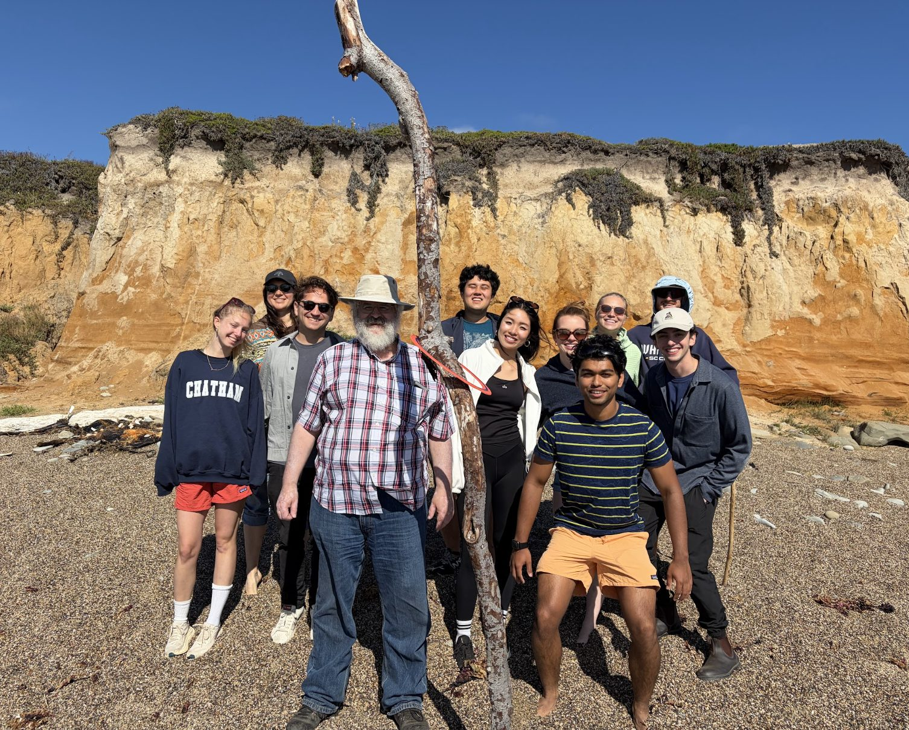
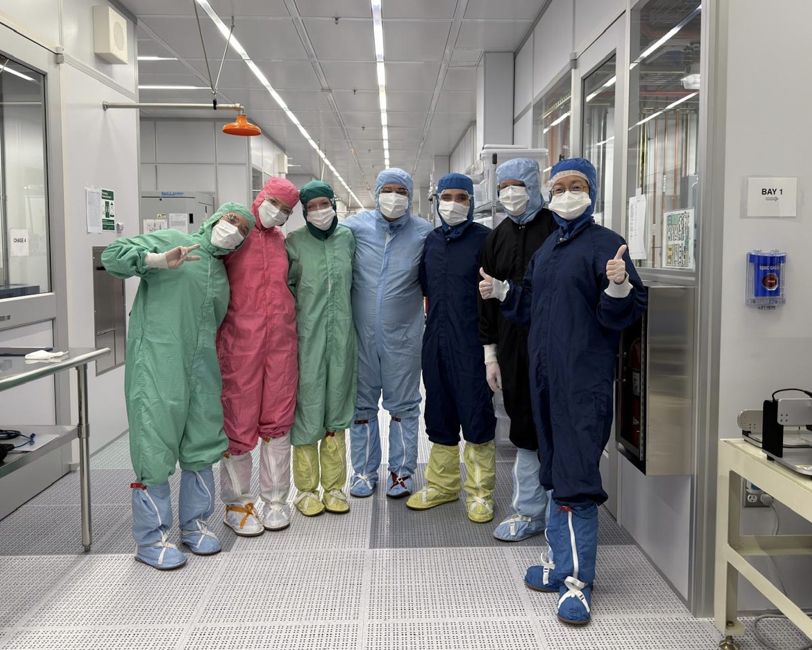
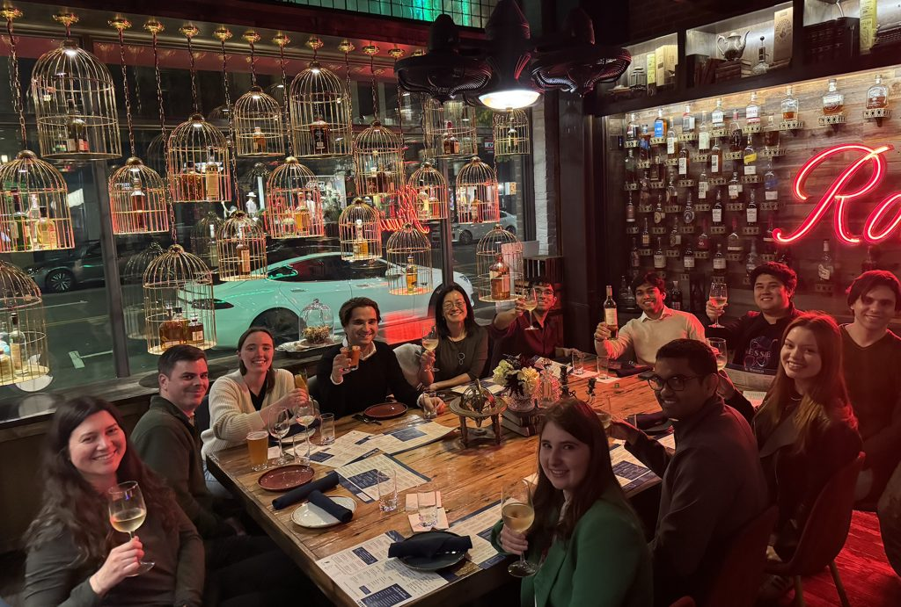
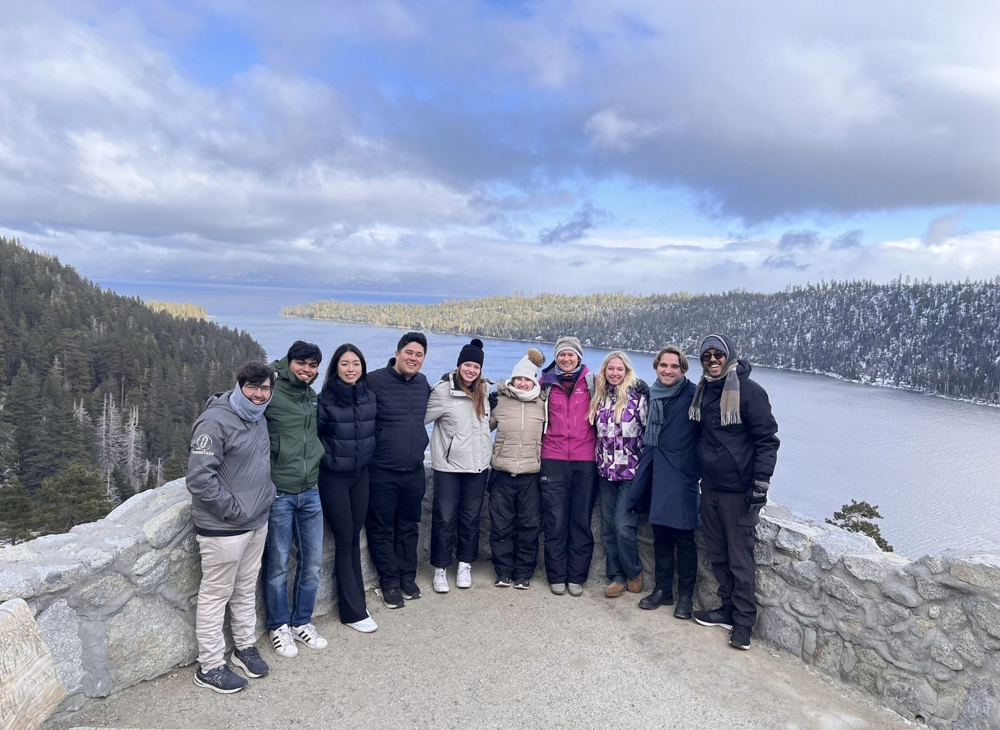
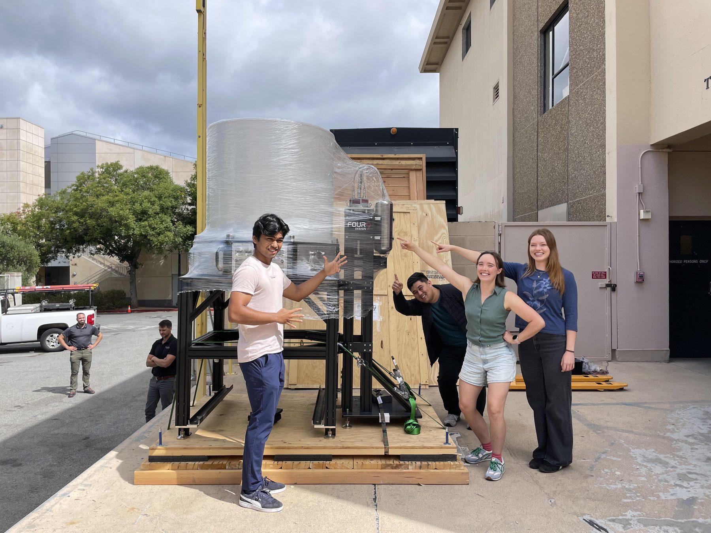
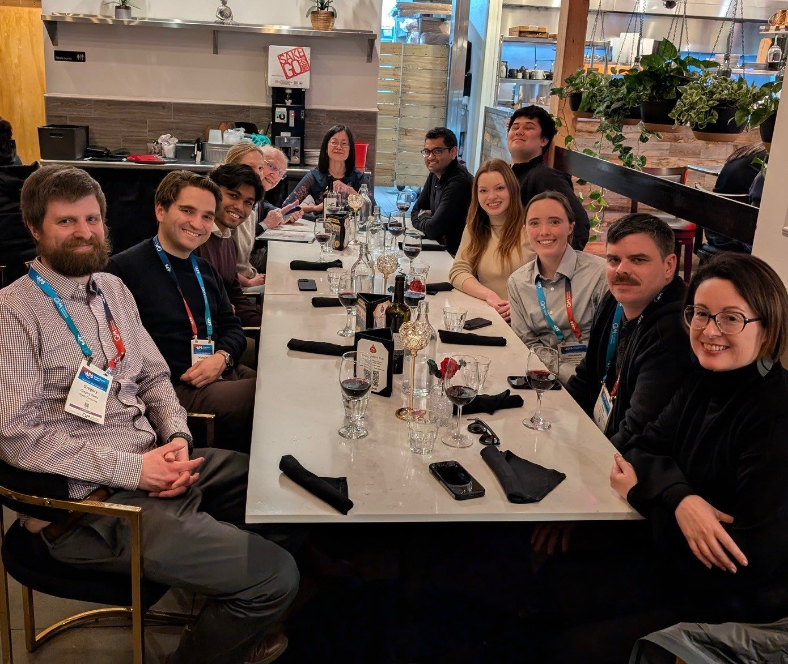
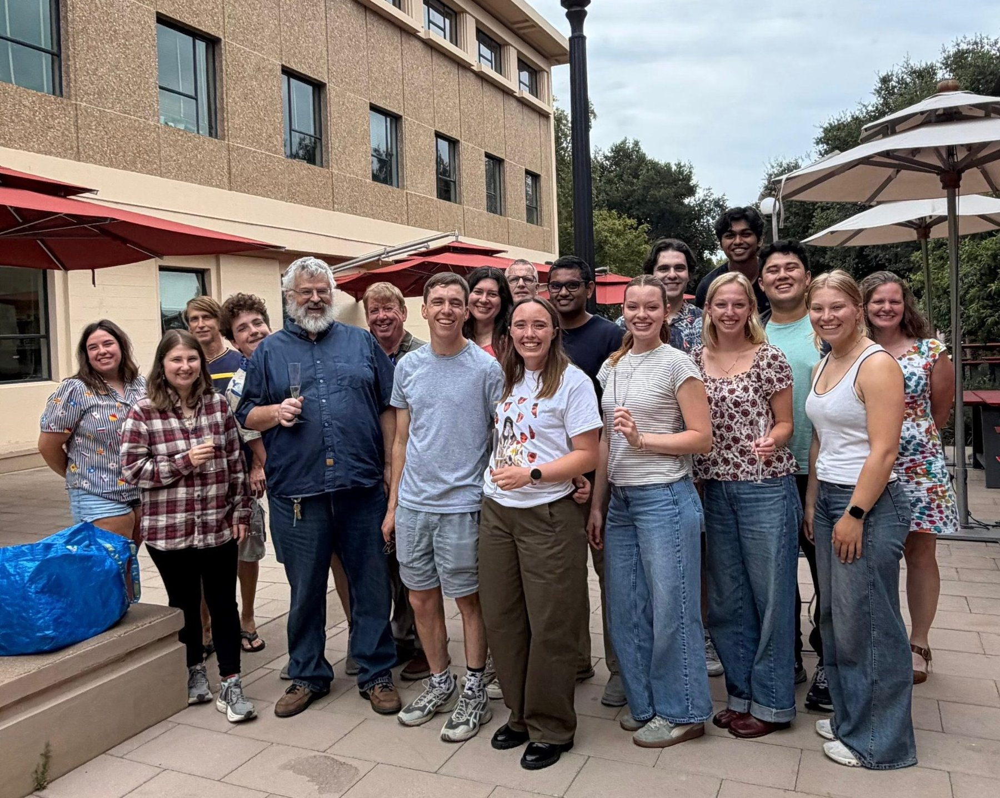
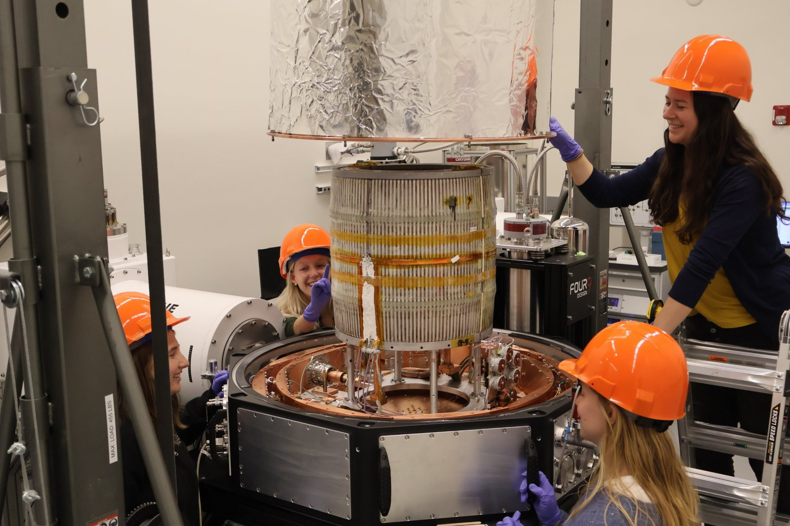

Group Pictures

Tide Pools at Bean Hollow State Beach 2026

NIST Boulder Tour 2026

APS Global Physics Summit dinner 2025

South Lake Tahoe 2025

DMRadio-50L custom cryostat arrives at Stanford 2025

Group dinner with Nobel Laureate John Clarke 2026

Cady passes her thesis defense! 2026

Opening up the DMRadio-50L cryostat after the first magnet cooldown 2026